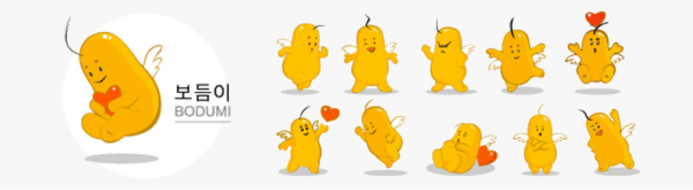

사회복지사
사회복지사(1, 2급)
[2020년 이후 자격증 기준(이수과목안내-사회복지학 전공교과목과 사회복지관련 교과목 및 학점 클릭 후 20년 기준 내용 확인)]
주요업무 및 역할
- 사회적, 개인적 문제로 어려움에 처한 의뢰인을 만나 그들이 처한 상황과 문제를 파악하고 그들이 필요로 하는 서비스의 유형을 판단한다.
- 문제를 처리, 해결하는 데 필요한 방안을 찾기 위해 관련 자료를 수집하고 분석하여 대안을 제시한다.
- 재정적 보조, 법률적 조언 등 의뢰인이 필요로 하는 각종 사회복지프로그램을 기획, 시행, 평가한다.
- 공공복지 서비스의 전달을 위한 대상자 선정 작업, 복지조치, 급여, 생활지도 등을 한다.
- 사회복지 자원봉사자를 모집하여 교육시키고 배치 및 지도감독을 한다.
- 사회복지정책 형성과정에 참여하여 정책분석과 평가를 하며 정책대안을 제시한다.
- 정신보건사회복지사는 정신질환자에 대한 개인력 조사 및 사회조사 작업을 진행하며 정신질환자의 사회복귀 촉진을 위한 생활훈련 및 작업훈련, 그 가족에 대한 교육, 지도 및 상담 업무를 수행한다.
이수과목 내용(사회복지사 2급)
| 구분 | 교과목 | 이수학점 |
|---|---|---|
| 필수 과목 |
사회복지개론, 인간행동과 사회환경, 사회복지정책론, 사회복지법제, 사회복지실천론, 사회복지실천기술론, 사회복지조사론, 사회복지행정론, 지역사회복지론, 사회복지현장실습 | 10과목 30학점 (과목당 3학점) 이상 |
| 선택 과목 |
아동복지론, 청소년복지론, 노인복지론, 장애인복지론, 여성복지론, 가족복지론, 산업복지론, 의료사회사업론, 학교사회사업론, 정신건강론, 교정복지론, 사회보장론, 사회문제론, 자원봉사론, 정신보건사회복지론, 사회복지지도감독론, 사회복지자료분석론, 프로그램 개발과 평가, 사회복지발달사, 사회복지윤리와 철학 | 4과목 12학점 (과목당 3학점) 이상 |
필수과목 중 사회복지현장실습에 관한 기준
- 가. 실습기관 : 법 제2조제1호에 따른 사회복지사업과 관련된 법인·시설, 기관 및 단체로 한다.
- 나. 실습지도자 : 사회복지사 1급 자격증을 소지한 자로서 3년 이상 또는 사회복지사 2급 자격증을 소지한 자로서 5년 이상 사회복지사업의 실무경험이 있는 자가 실습을 지도하여야 한다.
- 다. 실습 시간 : 현장실습 시간은 19년도 입학생 까지는 120시간 20년도 입학자 부터는 현장실습 시간 160시간 이상으로 한다.
사회복지사 1급(국가시험)
| 시험과목 | 시험영역 |
|---|---|
| 사회복지기초 |
|
| 사회복지실천 |
|
| 사회복지정책과 제도 |
|
관련기관
한국사회복지사협회(www.welfare.net)
정신보건사회복지사(1, 2급)
주요업무 및 역할
사회복지사 1급 자격증 소지자로서 정신보건분야에서 일정한 수련기간을 거친 전문사회복지사를 말하며 수련기간 및 경력에 따라 1급, 2급으로 구분된다. 정신질환자에 대한 정부 정책이 정신의료기관, 정신요양시설 중심의 입원 및 격리위주 정책에서 사회복귀시설, 정신보건센터 등 지역사회 중심의 재활 및 사회복귀 정책으로 전환되면서 정신보건분야 전문가에 대한 수요가 높아지고 있다. 또한 선진국형 질병구조로 변화함에 따라 정신질환자, 알코올 중독자 등이 증가하고 다양한 정신질환 발생률이 높아지는 추세이므로 정신보건사회복지사의 역할은 더욱 중요해질 것으로 예상된다.
정신보건사회복지사의 역할
- 정신질환에 대한 개인력 조사 및 사회조사
- 정신질환자의 그 가족에 대한 사회사업지도 및 방문지도
정신보건전문요원의 공통역할
- 사회복귀시설의 운영
- 정신질환자의 사회복귀 촉진을 위한 생활훈련 및 직업훈련
- 정신질환자와 그 가족에 대한 교육, 지도 및 상담
- 정신보건법 제25조 제1항의 규정에 의한 진단 및 보호의 신청
- 정신질환 예방활동 및 정신보건에 관한 조사
- 기타 정신질환자의 사회적응 및 직업재활을 위하여 보건복지부장관이 정하는 활동
정신보건사회복지사 자격기준
| 구분 | 내용 |
|---|---|
| 정신보건사회복지사 2급 |
|
| 정신보건사회복지사 1급 |
|
관련기관
한국사회복지사협회(www.welfare.net)
의료사회복지사
주요업무 및 역할
- 환자들의 심리 정서적 충격과 그와 관련된 위기, 혹은 장애와 관련된 사항이 삶에 있어서 미치는 심리사회적인 영향을 이해하고 다룰 수 있도록 지원하고, 또한 미래에 대한 계획을 세울 수 있도록 돕는다.
- 만성질환이나 장애에 대한 조정과 적응할 수 있는 대처양식을 개발하고, 새로운 환경에 재통합되거나 적응할 수 있도록 돕는다.
- 각 전문분야 치료팀의 일원으로 참여하여 의료적 상황에 영향을 받는 환자와 가족들의 심리사회적인 측면에 대한 이해와 인식을 제공한다.
- 지역사회 자원을 확인하고 연계함으로써 치료를 안정적으로 받을 수 있도록 하며, 퇴원 이후의 사회적 기능 향상을 돕는다.
- 말기 환자들에게 품위 있는 죽음이 될 수 있도록 상담을 진행하고, 가족들에게 사별과 관련된 서비스를 제공한다.
- 특정한 환자 집단의 욕구를 사정하고 이에 따른 프로그램을 기획하고 실행한다. 특히 자조집단 운영 및 지역사회 자원과 연계하여 서비스를 개발한다.
- 잠재적인 방임, 학대 그리고 취약계층에 대한 상담 및 유관기관과의 연계를 통해 보호하는 활동을 한다.
- 기관의 비전과 목적을 달성하도록 활동하고, 기관 차원에서 환자의 욕구에 민감하도록 개입한다.
응시자격
다음 각 호를 모두 만족하는 자
- 사회복지사 1급 자격증 소지자.
- 의료사회복지 실무경력 1년 이상, 또는 의료사회복지 연구 및 교육에 1년 이상의 경력을 가지고 있는 자.
- 응시원서 마감일까지 최근 3년간 연회비 납부 의무를 이행한 자. 또는 가입년도 이후 연회비를 완납한 자.
- 응시원서 마감일까지 최근년도 협회 인증 연수평점 20점 이수 확인 서류를 제출할 수 있는 자.
이와 동등한 자격이 있다고 협회자격관리위원회에서 인정하는 자.
| 구분 | 교시 | 형식 | 배점 | 과목 | 문제수 |
|---|---|---|---|---|---|
| 필기시험 | 1교시 | 객관식 5지선다형 | 50점 | 의료사회업 실무론 | 30문항 |
| 의료사회복지 윤리 | 5문항 | ||||
| 의료사회복지 제도 및 법제 | 15문항 | ||||
| 2교시 | 주관식 논술형 | 50점 | 의료사회사업 사례분석 | 1례 |
합격기준
- 합격은 총점 60점 이상 득점으로 한다.
- 합격 후에도 응시자격에 결석사유가 있는 경우, 그 합격을 취소한다.
관련기관
한국사회복지사협회(www.welfare.net)

사회복지사 캐릭터 보듬이
국제의료관광코디네이터
국제의료관광코디네이터는 외국인환자를 유치하고 관리하기 위한 구체적인 진료서비스지원, 관광지원, 국내외 의료기관의 국가 간 진출을 지원할 수 있는 의료관광마케팅, 의료관광 상담, 리스크관리 및 행정업무 등을 담당합니다.
응시자격
다음 각 호에 해당하는 자는 응시할 수 있다.
- 4년제 보건의료, 관광분야의 학과 졸업자
- 3년제 보건의료, 관광분야의 학과 졸업자 + 1년 경력
- 2년제 보건의료, 관광분야의 학과 졸업자 + 2년 경력
- 보건의료 또는 관광분야에서 4년 이상 실무 경력자
- 의사,간호사, 보건교육사, 관광통역안내사, 컨벤션기획사 1·2급을 취급한 사람
시험과목
| 자격구분 | 시험구분 | 시험과목 | 합격기준 |
|---|---|---|---|
| 국제의료관광코디네이터 | 1차필기 | 보건의료관광행정 | 합산평균 60점 이상인자 과목별 40점 미만 과목인 경우 과락 |
| 보건의료 서비스 자원관리 | |||
| 보건의료 관광마케팅 | |||
| 관광서비스자원관리 | |||
| 의학용어/질환의 이해 | |||
| 2차필기 | 보건의료관광 실무 | 60점 이상인자 |